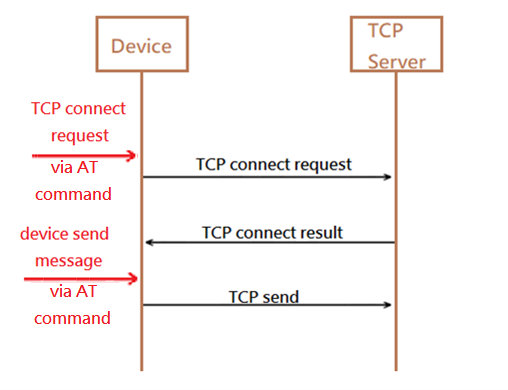
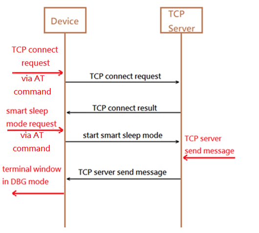

TCP Cloud
This TCP Cloud Demo is the application utilizes the TCP cloud ported from cloud template so that the OPL device can connect to TCP server. The example application is in \examples\cloud\tcp_demo. The TCP Cloud is in\quick_dev\app_ref\cloud\tcp_cloud. This example is mainly to demonstrate how to connect to the TCP Server after connecting to Wi-Fi.
In the beginning of this example, it will connect to Wi-Fi using BLE broadcast, as in QD_APP (see QD_APP for details). This example is mainly to demonstrate how to connect to the TCP Server after connecting to Wi-Fi, and the TCP Server we apply is "SocketTest" (url: http://sockettest.sourceforge.net/). A JAVA environment is necessary to run the "SocketTest" server. After running SocketTest, press "Start Listening".
1. How to connect and send message to TCP Server

In this example, if the user wants to connect to the TCP Server, issue AT command "at+tcpconnet= IP address,port" to send the TCP connection request. After sending the TCP connection request, the TCP Server will connect and send the result back to the Device. The "TCP connect" message will show in DBG mode of terminal window.
After connected, if the user can send data to the TCP Server. Issue AT command "at+tcpsend= the message user wants to send” to send data to the TCP Server.
Server will receive the same data and display in server console.
2. Keep alive demonstration
After connected, issue AT command “at+smartsleep” to turn on Smart Sleep mode. Even in sleep mode, the device will still send a "ping" message to the TCP Server every 10000ms(10S). The purpose is to tell the TCP Server that the device is still alive.
Server will receive the "Ping" message and display in server console.
3. Receive message

After device connected to server and enter Sleep mode, input message in "Send Message" textbox of "SocketTest". Server will send the message to the device. After receiving in device side, the message will display in DBG Console.
MQTT Cloud
This MQTT Cloud Demo is the application utilizes the MQTT cloud ported from cloud template so that the OPL device can connect/subscribe/publish to MQTT server. The example application is in \examples\cloud\mqtt_demo. The MQTT cloud is in \quick_dev\app_ref\cloud\mqtt_cloud. This example is mainly to demonstrate how to connect to the MQTT Server and publish and subscribe Topic after connecting to Wi-Fi.

The MQTT server (Broker) will hand-over the data from client who published to client who subscribed, it is a center role of MQTT system. And all the clients are connected to same Broker and using topic subscribe/publish mechanism to transmit and receive data. So as the MQTT demo, user will need to install a client on your PC to create a demonstration environment.
- Setup remote MQTT client
First, we have to setup another remote MQTT client (a soft MQTT client running on PC). The MQTT client tool we apply in this example is "MQTTX" (url: https://www.emqx.com/en/downloads/MQTTX/v1.8.1/MQTTX-Setup-1.8.1-x64.exe).
After installed, open the tool and setup like screen shot.
Press ”+” to create new connections, and the general setup descripts are. Name: like the name of the project, just for recognize in this tool. Client ID: the “UNIQE” ID for server to register, should be an only name for all the clients. Host: the demonstration of project is connected to the public MQTT server, “broker.emqx.io” Port: the “broker.emqx.io” port using 8883 SSL/TLS: enable authentication during connection Certificate: using CA signed server (only need server to sign the CA cert) SSL Secure: enable
- Add new subscription (topic from device)
After filled all necessary items, press connect on right-top of this window. If connect successfully, you will see the UI like screen shot.
You can add new subscription to listening the topic (red square) and publish topic (blue square).
After press “New Subscription”, user will see this window like the screen shot below and the default topic that device publis is “QD_FWK/MQTT_DEMO/PUB_Test/1”.
After entering the Topic, user can press Confirm to finish building subscription and see this window like the screen shot blow
The device will published “Hello MQTT!” per 1500 ms(15s), we can also see the topic publish displayed in device debug console.
- Publish topic (to device)
There are two topics subscribed in device side. They are “QD_FWK/MQTT_DEMO/SUB_Test/1” and “QD_FWK/MQTT_DEMO/SUB_Test/2”.
User can publish same topic from MQTTX as screen shot below
In device debug console, the same topic will be recevied